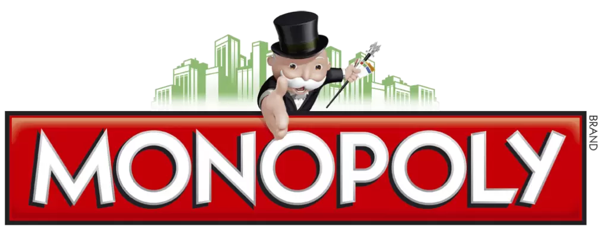

Описание проекта

«Монополия» — экономическая и стратегическая настольная игра для двух и более человек. Получила большую популярность в XX веке во многих странах мира, включая СССР; в последнем была также известна под названиями «Менеджер», «Империя», «Бизнесмен». Цель игры — рационально используя стартовый капитал, добиться банкротства других игроков. Фактически «Монополия» представляет собой игровое поле, состоящее из квадратов, которые проходят по кругу все игроки по очереди. Квадраты разделяются на активы (предприятие, ценная вещь) и события. Когда игроку выпадает очередь ходить, то броском кубика он определяет, какое количество шагов он должен совершить на игровом поле за этот ход (каждый шаг соответствует одному очку на кубике и одному квадрату на игровом поле). В настоящее время имеются многочисленные компьютерные воспроизведения «Монополии», а также вариации для игровых консолей и сотовых телефонов.
Игровое поле: